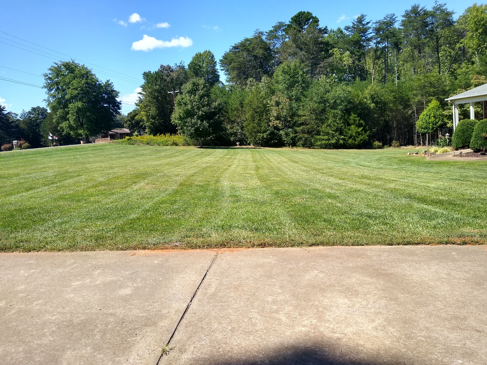
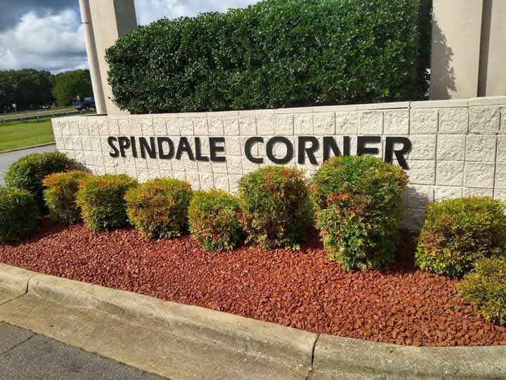
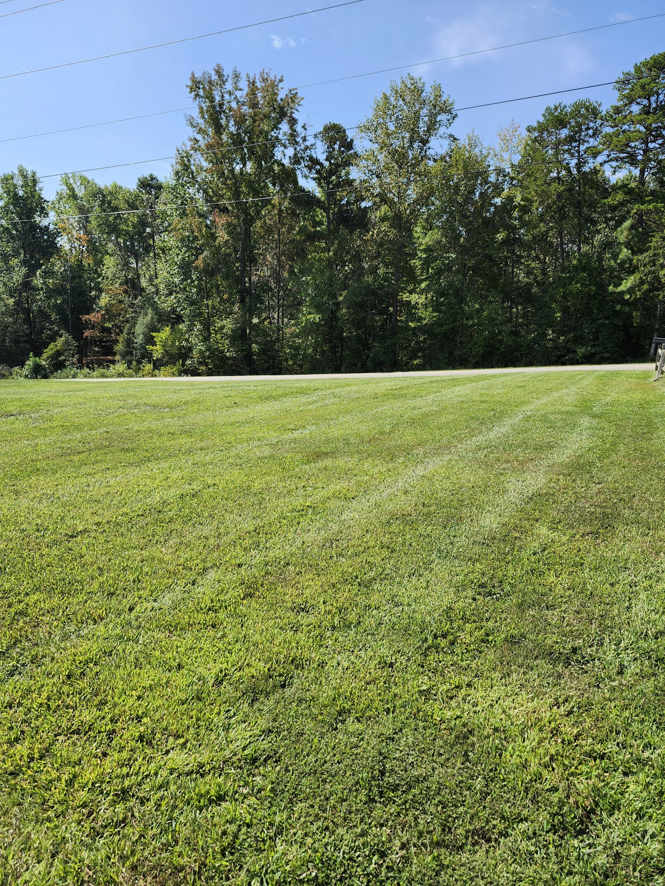
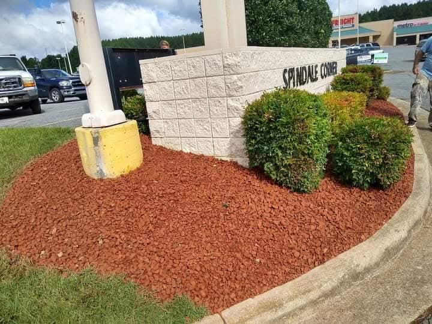
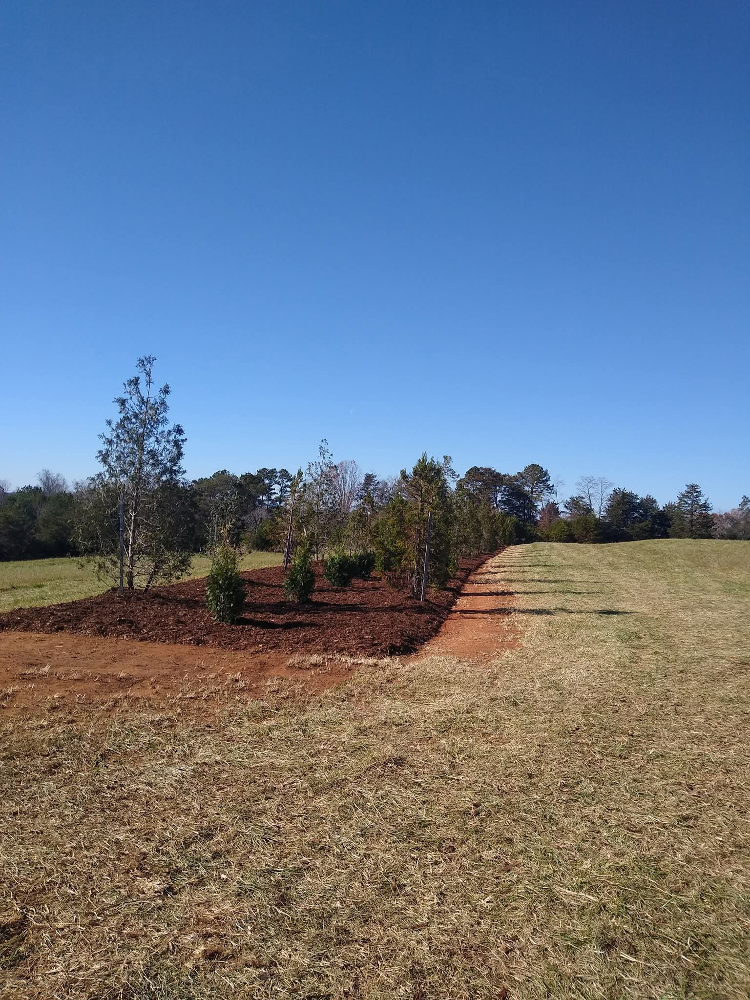
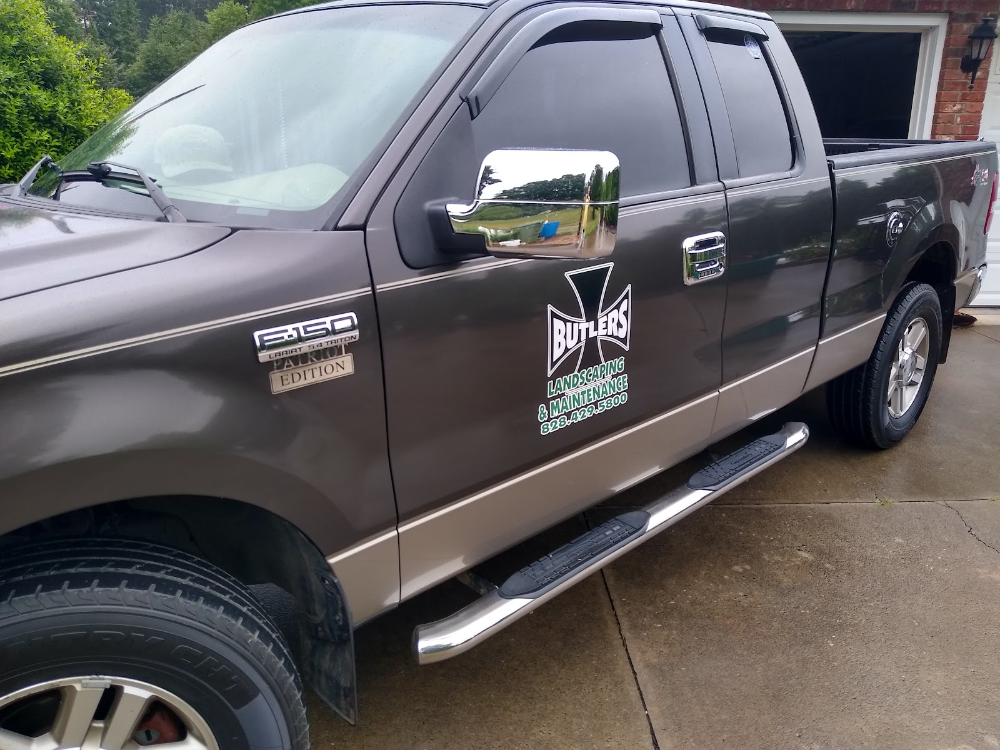

Mowing & lawn maintenance
Clean, striped cuts on a regular schedule — from compact residential lots to wide open acreage and roadside frontage.
Butlers Landscaping mows, mulches and maintains homes, acreage and commercial properties around Forest City. From a backyard that needs rescuing to a storefront that has to look sharp, we keep it tidy so you don't have to think about it.
4.8 · 12 reviews on Google

Residential & commercial
Homes, acreage & storefronts
4.8-star rated
Across 12 Google reviews
Local to Forest City
Serving Rutherford County
Acreage & small jobs
From a yard to commercial grounds
The everyday work that keeps a property looking maintained — mowing on a schedule, fresh beds, trimmed shrubs, and the bigger seasonal jobs in between.
Clean, striped cuts on a regular schedule — from compact residential lots to wide open acreage and roadside frontage.
Crisp, fresh-edged beds and mulch or decorative rock that frame an entrance and keep weeds down — for homes and commercial corners alike.
Shaped hedges and rounded shrubs that stay tidy through the season — pruned to keep entrances and walkways looking deliberate.
New trees, shrub lines and planted beds set in fresh soil and mulch — adding structure and privacy to a property over the long run.
Storefronts, storage facilities and business entrances kept presentable on a recurring schedule, so the first thing customers see is sharp.
Overgrown lots, neglected backyards and seasonal cleanups brought back under control and put on a maintenance plan that keeps them that way.
Tell us the property and what it needs — a one-time cleanup or a regular mowing schedule. We'll talk it through.
We look at the lot, the beds and the access, then give you a straight price — no surprises, no pressure.
Once it's on the schedule, the grass gets cut and the beds stay clean — you just see a property that always looks maintained.
A few properties we maintain — residential lawns, fresh commercial beds and the equipment that keeps it all on schedule.





4.8 · 12 reviews on Google
"we moved from the South Carolina beach to the Vista at the Riverbank... the backyard was in pretty bad shape.. we had fencing put in and then called Butler Landscaping"
"Steve has been great to work with. He has been a tremendous help in making our storage facility look sharp!"
Reviewers describe everything from a relocated family's backyard rescue to keeping a commercial storage facility's grounds sharp — residential and commercial, both on the same crew.
We work across Forest City, Spindale, Rutherfordton and the surrounding Rutherford County area — residential and commercial. Call or text to get on the schedule.
Office hours
Tell us about your property and we'll give you a straight quote. Homes, acreage and commercial grounds across Rutherford County.